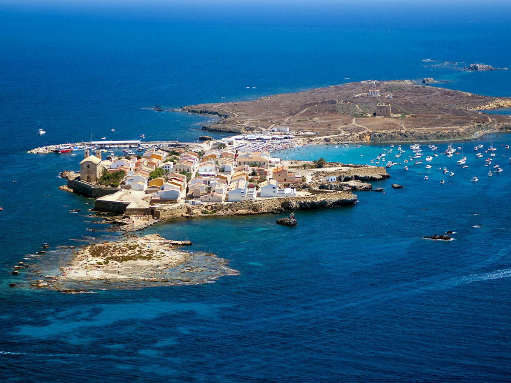

🏝 Пять лет в Испании, а на Табарке не была
🏝 ПЯТЬ ЛЕТ В ИСПАНИИ, А НА ТАБАРКЕ НЕ БЫЛА
Пятый год живу на Costa Blanca, но до Табарки так и не доехала. Хотя почти все знакомые там уже были. Наконец решила исправиться и собрала план на день.
Чем она интересна
Это маленький обитаемый остров у Аликанте. В XVIII веке сюда переселили выходцев с генуэзской Табарки и построили укреплённый город. Вокруг находится первый морской заповедник Испании, поэтому сюда едут и ради снорклинга.
Откуда поеду
Добраться можно из Alicante, Santa Pola и других городов побережья. Я выберу Santa Pola: мне так ближе и удобнее. Билеты лучше проверить заранее.
Что буду делать
• Начну с главного песчаного пляжа
• Возьму маску и поплаваю у скал
• Дойду до Torre de San José
• Если не будет слишком жарко, обойду остров пешком и сделаю фотографии
Что оставлю на потом
Museo Nueva Tabarca. В жару на музей меня вряд ли хватит.
Что беру
Маску, обувь для воды, SPF 50, шляпу, воду и еду.
После поездки обязательно поделюсь впечатлениями.
10:00👁 ~?